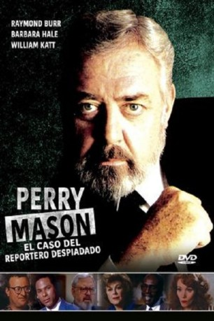

IMDB-Wertung: 7.2 / 10
IMDB-Wertung: 7.2 / 10  Metascore:
Metascore: 
Als der verhasste Chefmoderator eines Nachrichtensenders ermordet wird, findet man bei dem Toten die Waffe einer Moderatorin. Perry Mason stößt bei der Verteidigung der Angeklagten auf weitere Verdächtige.
Alternativ: Perry Mason: The Case of the Ruthless Reporter
 IMDB-Wertung: 7.2 / 10 Metascore:
Als der verhasste Chefmoderator eines Nachrichtensenders ermordet wird, findet man bei dem Toten die Waffe einer Moderatorin. Perry Mason stößt bei der Verteidigung der Angeklagten auf weitere Verdächtige.
Jahr: 1991
Dauer: 90 Minuten
FSK:
Land: USA Studio: NBCTonspuren: DD5.1 - ,
Untertitel:
Auflösung: 1080p (1424x1080) Größe: 3717 MB
Regisseur: Christian I. Nyby II
Drehbuch: Sean Cholodenko
Soundtrack:
Darsteller:
 Raymond Burr als Perry Mason
Raymond Burr als Perry Mason Barbara Hale als Della Street
Barbara Hale als Della Street William R. Moses als Ken Malansky
William R. Moses als Ken Malansky Jerry Orbach als Vic St. John
Jerry Orbach als Vic St. John Earl Billings als Al Shockley
Earl Billings als Al Shockley Peter Jurasik als Gary Slate
Peter Jurasik als Gary Slate Mary Page Keller als Cassie Woodfield
Mary Page Keller als Cassie Woodfield James McEachin als Lt. Ed Brock
James McEachin als Lt. Ed Brock Brad Leland als Fire Captain
Brad Leland als Fire Captain Terry Rhoads als Lance
Terry Rhoads als Lance Beau Starr als Dave Franco
Beau Starr als Dave FrancoDatei: X:\Person\Perry Mason\Perry Mason und die skrupellose Sensationsreporterin (1991, FSK, 1424x1080).mkv seit 11.10.2017
Festplatte: HD Collection-7+mehr(A-Z)+Person
 Es gibt insgesamt 20 Filme in der Gruppe 'Person\Perry Mason'
Es gibt insgesamt 20 Filme in der Gruppe 'Person\Perry Mason'